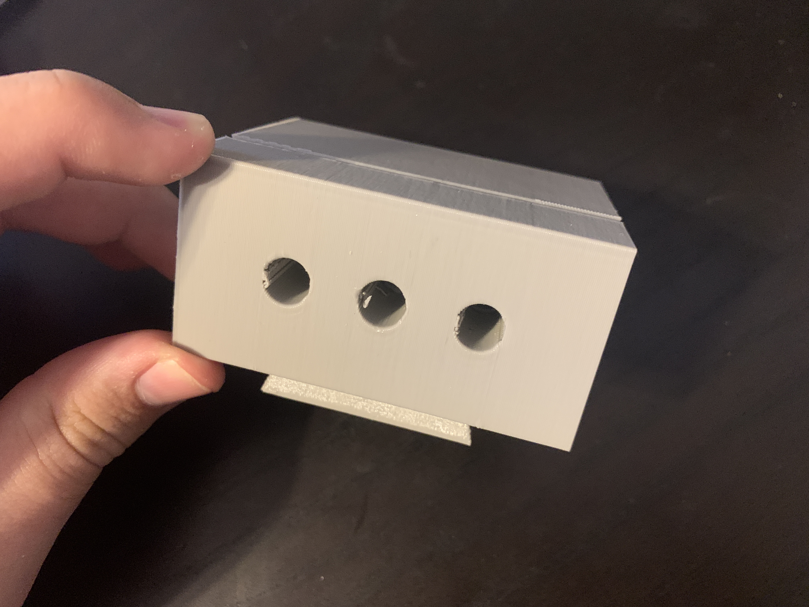
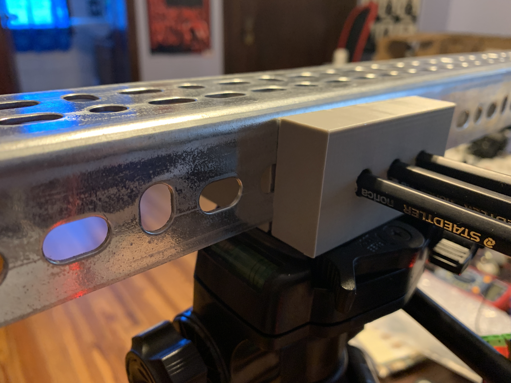
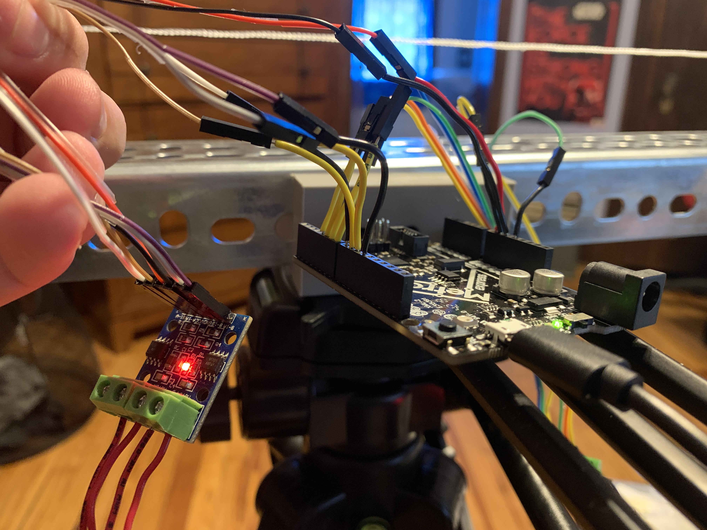
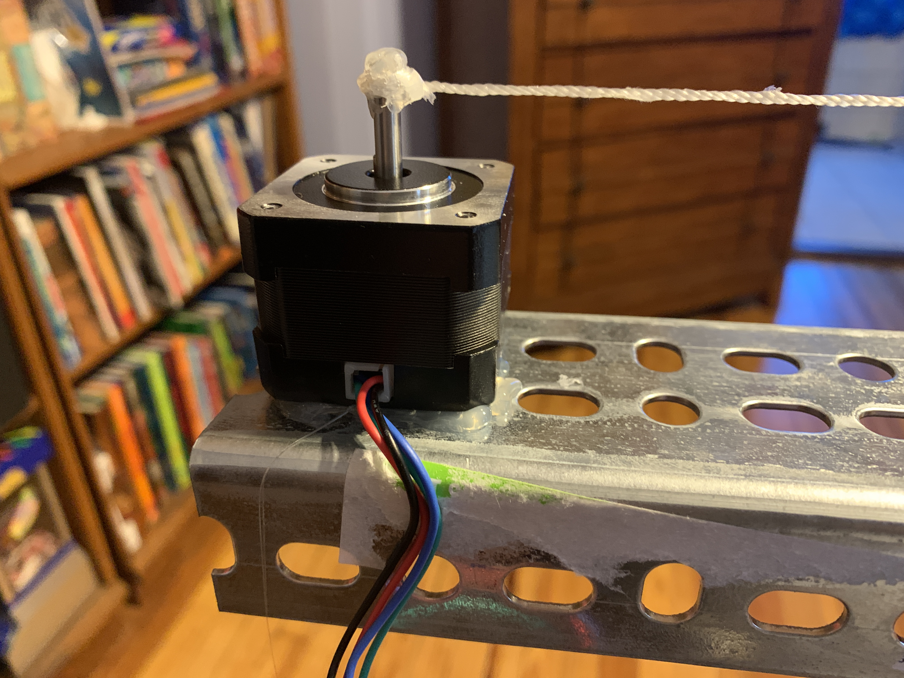

Machine Building
This assignemt tasked me with controlling steppermotors with a computer. I knew that I would need something like this for my final project, and I had just recieved my 3D printed part in the mail (Right). The part fit into my tripod perfectly, so I began coding the metro board to accept intergers from my computer's serial monitor. The metro board would send the number to the stepper motors and they would take that many steps. I then placed a motor on each end of the tripod bar and hot-glued a string's end to the motor shafts. After testing some, I determined that 4000 steps was about how much a point on the string needed to get from one side to the other.



